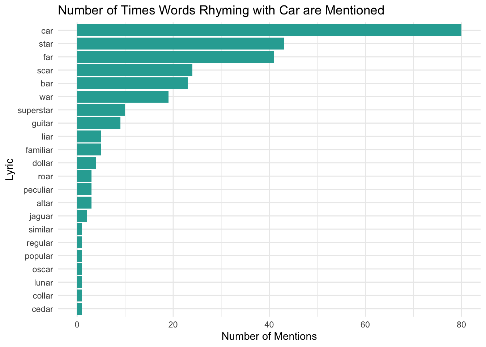
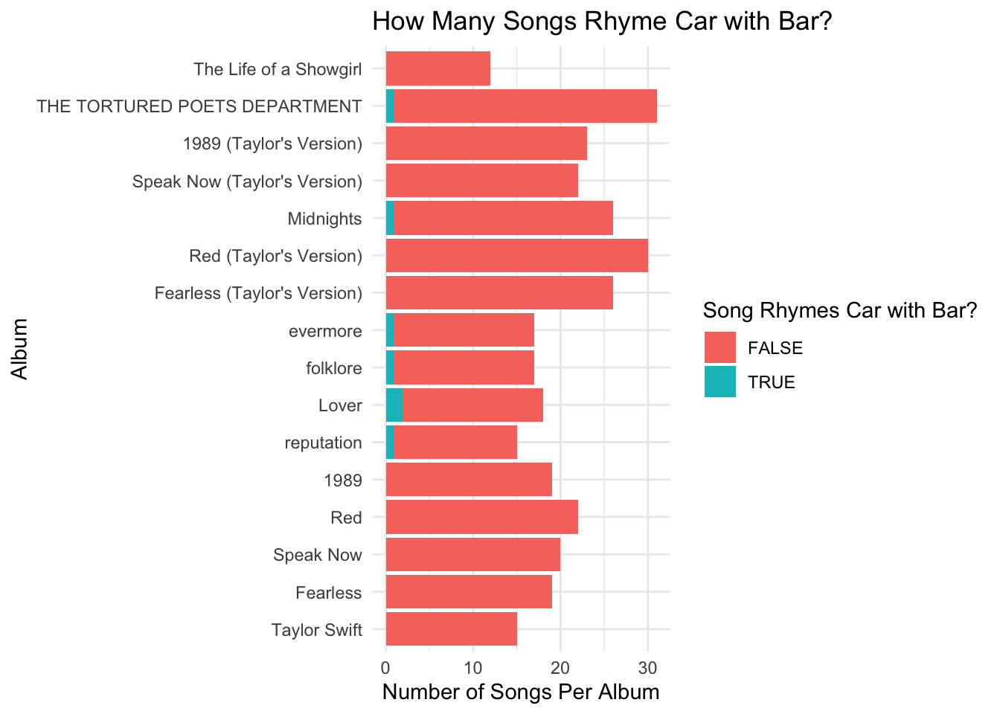
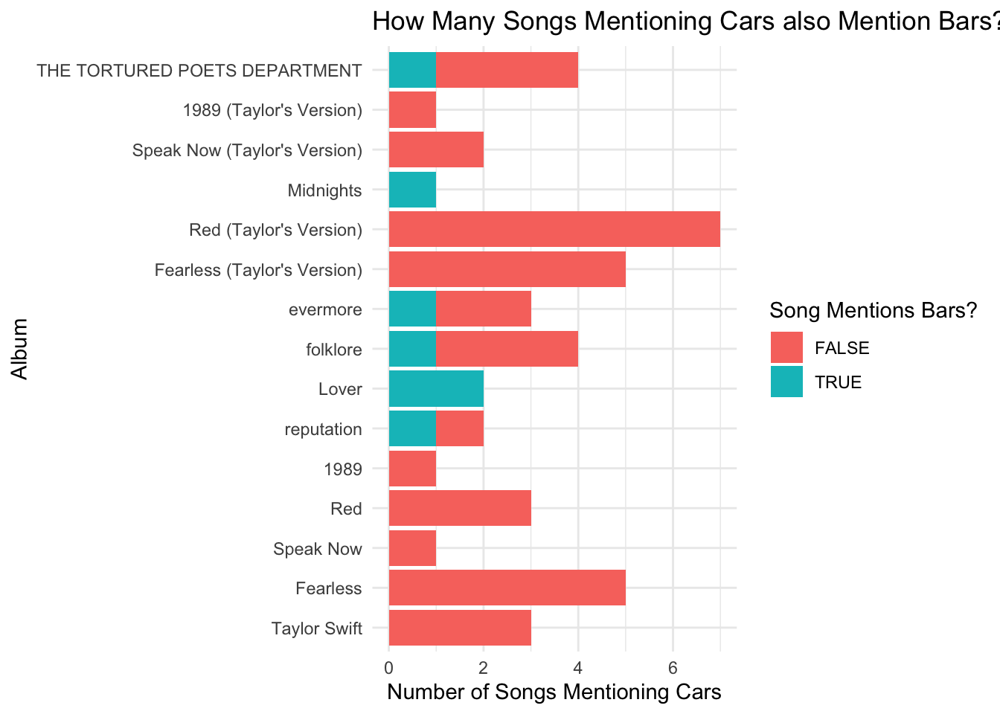
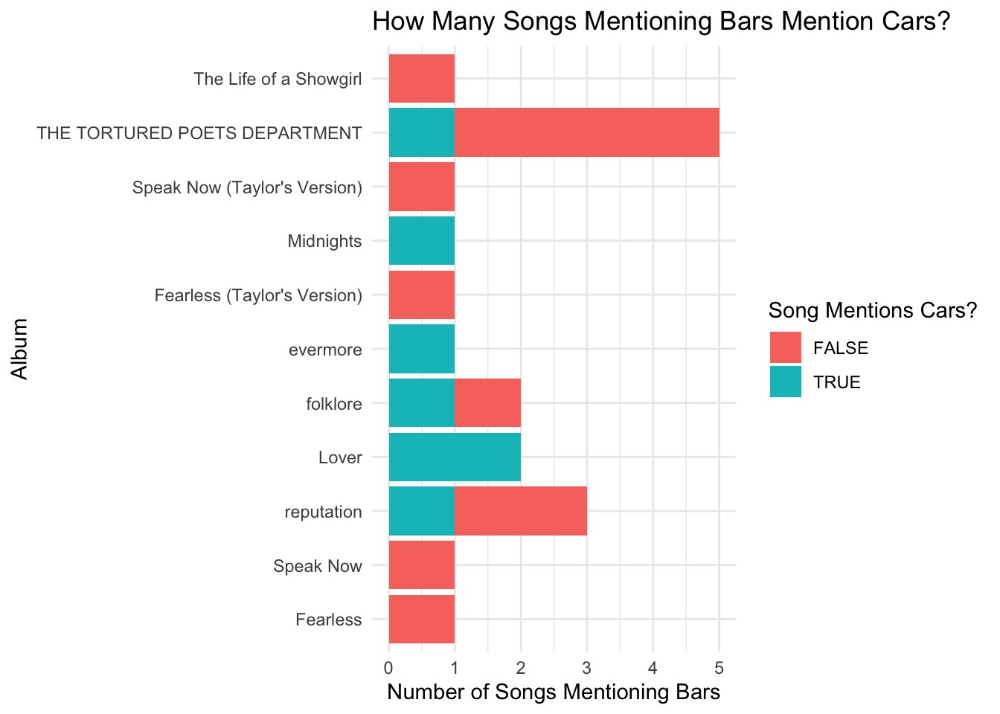
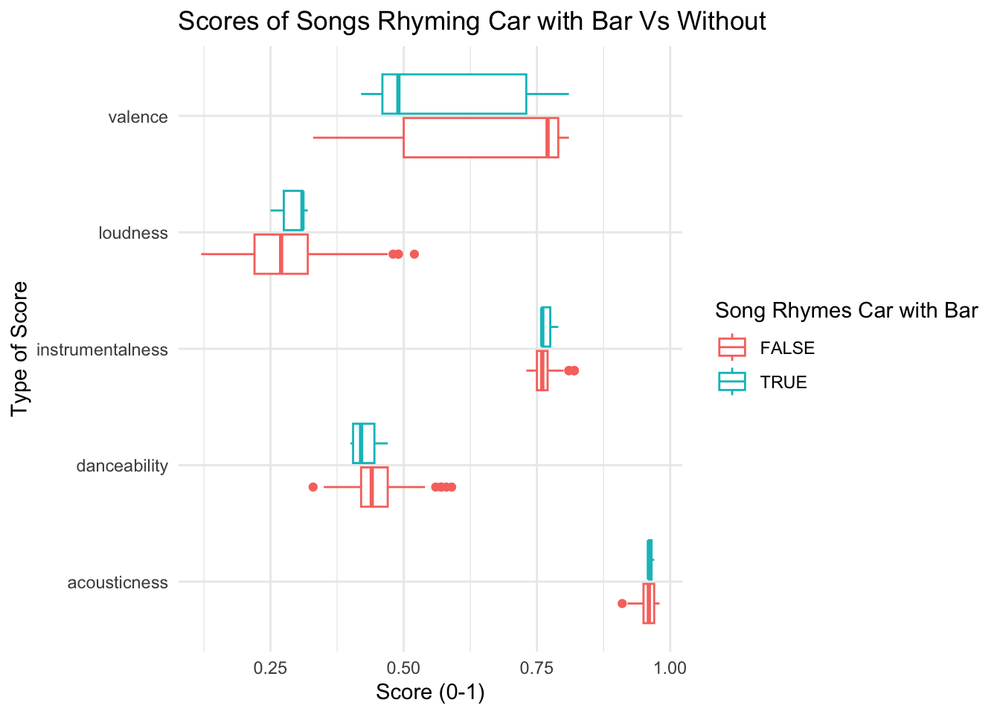
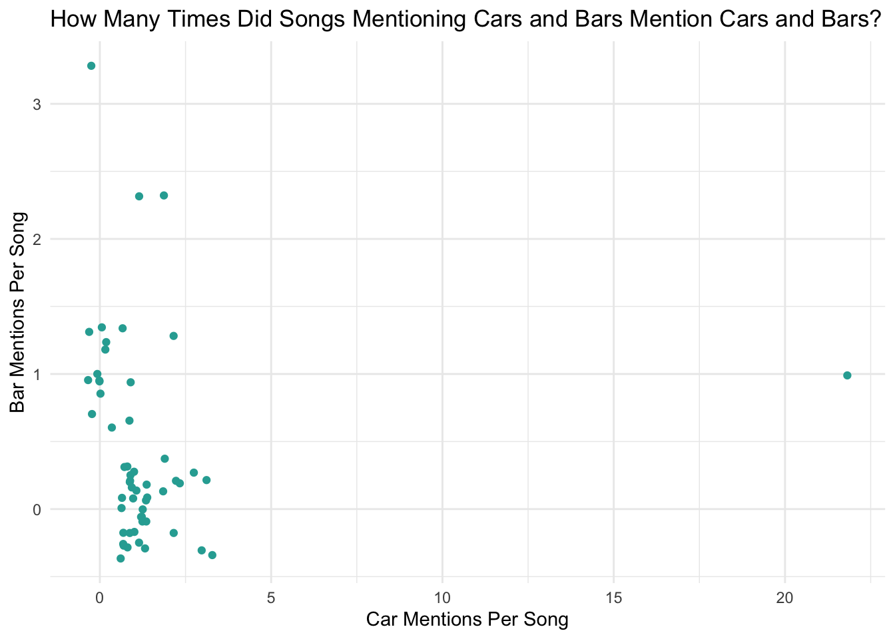

R Code
library(tidyverse)
library(taylor)
data(package = "taylor")
data("taylor_album_songs")This processed data comes from the taylor R Package, authored and maintained by W. Jake Thompson. Data originally came from Genius and the Spotify API. I learned about this data from TidyTuesday’s 2023-10-17 project.
Continuing with my Data Visualization from Project 1, here, I will look at Taylor Swift song lyrics.
Motivation
Taylor Swift gets a lot of hate for supposedly overusing “car” as a rhyme with “bar.” I am very skeptical of this criticism, and so I will analyze how frequently she actually does this.
In order to invesigate this very pressing research question, I am looking at data containing all the lyrics from songs on Taylor Swift’s albums released by February 2026. This excludes non-album singles like “Christmas Tree Farm,” and songs released after February 2026, like “Pink Clouding.””
Background
First, to see if this critiscim might hold weight, I am interested in the number of times Taylor Swift songs contain words that rhyme with car. The following plot summarizes this:
# NOTE: For grading purposes, I believe I hit all requirements for the project
# in the making of this first graph. I made a lot of other graphs, but you do not need to look at them to grade this!
#I looked up "unlist()" to make the list of lists into a list with objects
# Source - https://www.r-bloggers.com/2023/08/the-unlist-function-in-r/
all_ars_bad <- as.character(taylor_album_songs$lyrics) |> str_extract_all("\\b\\w+(?<!e)ars?\\b")
all_ars <- all_ars_bad |> unlist()
# I looked up a function that would make the list into a data frame
#source - https://www.geeksforgeeks.org/r-language/how-to-convert-a-list-to-a-dataframe-in-r/
all_ars_data <- as.data.frame(list(raw_words = all_ars)) |>
mutate(lowercase_ars = str_to_lower(raw_words)) |>
mutate(all_singular_ars = ifelse(str_detect(lowercase_ars, "s\\b"),str_sub(lowercase_ars, 1, str_length(lowercase_ars)-1), lowercase_ars)) |>
group_by(all_singular_ars)|>
summarize(ar_counts = n())
ggplot(all_ars_data, aes(x = fct_reorder(all_singular_ars, ar_counts), y = ar_counts)) +
geom_col(fill = "#2aaaa2") +
labs(
title = "Number of Times Words Rhyming with Car are Mentioned",
x = "Lyric",
y = "Number of Mentions"
) + coord_flip() + theme_minimal()
Combinatorialists rejoice! Taylor Swift is clearly a fan of stars and bars.
This plot suggests that out of all words that rhyme with “car,” Taylor Swift uses “car” the most frequently, and “bar” is very common, as well. However, “star,” “far,” and “scar,” are actually used more than “bar”, and so future investigations into this topic could determine how freuently these other words are used as rhymes for “car.”
However, since “bar” is mentioned so frequently, it is worth starting our investigation into how frequently Taylor Swift rhymes car with bar.
Car-Bar Rhymes
First, we will determine how frequently Taylor Swift rhymes car with bar per album.

This graph suggests that in the vast majority of her songs, Taylor Swift actually does not rhyme car with bar. We can get exact numbers using this table, which tells us the percentage of songs in each album where Taylor Swift rhymes car with bar:
# A tibble: 16 × 4
album_name Num_Songs_Rhyme_Car_…¹ Num_Songs_On_Album Perc_Car_w_Bar_Rhymes
<chr> <int> <int> <dbl>
1 1989 0 19 0
2 1989 (Taylor… 0 23 0
3 Fearless 0 19 0
4 Fearless (Ta… 0 26 0
5 Lover 2 18 0.111
6 Midnights 1 26 0.0385
7 Red 0 22 0
8 Red (Taylor'… 0 30 0
9 Speak Now 0 20 0
10 Speak Now (T… 0 22 0
11 THE TORTURED… 1 31 0.0323
12 Taylor Swift 0 15 0
13 The Life of … 0 12 0
14 evermore 1 17 0.0588
15 folklore 1 17 0.0588
16 reputation 1 15 0.0667
# ℹ abbreviated name: ¹Num_Songs_Rhyme_Car_w_barThis table clearly shows that even in “Lover,” (the album with the most songs containing car-bar rhymes), only 11.1% of the songs contain a car-bar rhyme. This seems to be enough evidence to dispute the claim that Taylor Swift is constantly rhyming car with bar.
Now, one might wonder how versatile Taylor Swift’s uses of car and bar are. Though she seems to not be rhyming car with bar that frequently, it is still unclear how frequently cars and bars are mentioned when they are not used as a rhyme for each other. To investigate this, the following plots show the number of songs that mentioned either cars or bars in each album, as well as how many of these mentions were instances where the mentioned car or bar was a rhyme for the other.
This first plot only considers songs where Taylor Swift mentions cars. If a box is blue, it means that car was mentioned as a rhyme for bar, and if a box is red, it means that car was mentioned independently, with no mention of bar.
I happen to know that all of the 7 times that car and bar were mentioned in the same song, car was used as a rhyme for bar. Thus, we can see the proportion of times car is used as a rhyme for bar by comparing the number of songs mentioning cars and bars and the number of songs only mentioning cars.

This plot suggests that Taylor frequently mentions cars without feeling the need to rhyme car with bar.
This second plot only considers songs where Taylor Swift mentions bars. If a box is blue, it means that bar was mentioned as a rhyme for car, and if a box is red, it means that bar was mentioned independently, with no mention of car.

Comparing the bars chart to the cars chart, it seems like Taylor is more likely to mention cars without rhyming it with bars than she is to mention bars without rhyming it with cars. However, Taylor still does mention bars a decent amount (especially in “THE TORTURED POETS DEPARTMENT”…breakups are rough.) We can summarize these results:
# A tibble: 1 × 4
Perc_Car_Bar_Rhymes Perc_Bar_Rhymes_Per_Car_Me…¹ Perc_Car_Rhymes_Per_…² rhymes
<dbl> <dbl> <dbl> <int>
1 2.11 15.9 36.8 7
# ℹ abbreviated names: ¹Perc_Bar_Rhymes_Per_Car_Mentions,
# ²Perc_Car_Rhymes_Per_Bar_MentionsThis table clearly shows that very few Taylor Swift songs actually feature car-bar rhymes (only 2.11%!), or 7 songs in total. It also shows Taylor is less likely to mention bar on its own than car on its own. Only 15.9% of the time that cars are mentioned are they mentioned as a rhyme with bar. However, 36.8% of the time bars are mentioned are they mentioned as a rhyme with car.
However, I do not believe that repeatedly rhyming cars with bars is in itself a problem. instead, critics usually complain that rhyming cars with bars is indicative of lazy songwriting. Thus, if rhyming cars with bars is truly a valid critique, we would expect Taylor’s songs that rhyme cars with bars to be less musically diverse than Taylor’s songs that do not rhyme cars with bars. In the next plot, we will compare the spread of 5 different scores for Taylor Swift songs that rhyme car with bar, and those that don’t.
longer_car_bar_data <- car_bar_data |>
pivot_longer(cols = c(danceability, loudness, acousticness, instrumentalness, valence), names_to = "what_var" , values_to = "what_val")
longer_car_bar_data |>
ggplot(aes(x = what_var, y = what_val, color = car_bar)) +
geom_boxplot() +
labs(title = "Scores of Songs Rhyming Car with Bar Vs Without",
x = "Type of Score", y = "Score (0-1)", color = "Song Rhymes Car with Bar") + coord_flip() + theme_minimal()
It seems like regardless of whether or not Taylor Swift rhymes car with bar, her songs are quite varied in terms of valence (how cheerful a track sounds). Thus, rhyming car with bar does not seem to limit the emotions Taylor is able to convey in her music.
It does seem like songs rhyming cars with bars are not as varied as songs that do not rhyme cars with bars in terms of loudness or danceability. However, one needs to remember that only 7 songs rhyme cars with bars, and in total, Taylor Swift’s albums have over 200 songs that do not rhyme cars with bars.
Finally, it seems like Taylor Swift songs are not very diverse in terms of acousticness and instrumentalness, regardless of whether or not they rhyme car with bar.
This does not provide strong data to suggest that rhyming cars with bars greatly diminishes Taylor Swift’s songwriting range.
If one is interested in how frequently Taylor Swift mentions cars or bars in the songs where she does, this graphic provides a visualization:
how_many_cars_and_bars_data <- taylor_album_songs |>
mutate(how_many_car = str_count(lyrics, "\\b[Cc]ars?\\b")) |>
mutate(how_many_bar = str_count(lyrics, "\\b[Bb]ars?\\b")) |>
filter(how_many_car > 0 | how_many_bar > 0)
ggplot(how_many_cars_and_bars_data) +
geom_point(aes(x = how_many_car, y = how_many_bar), color = "#2aaaa2", position = position_jitter()) +
labs(
title = "How Many Times Did Songs Mentioning Cars and Bars Mention Cars and Bars?",
x = "Car Mentions Per Song",
y = "Bar Mentions Per Song") + theme_minimal()
This plot suggests that there is not much correlation between the number of times a song mentions car and the number of times a song mentions bar. For most songs, car and bar are not mentioned more than 3 times.
The high outlier with over 20 mentions of “car” is the song “Getaway Car,” which obviously mentions cars a lot. For one instance of the lyric “car” in “Getaway Car,” the “car” lyric is indeed used as a rhyme for “bar.” However, it is worth noting that all other mentions of “car” mention “car” independently, and do not use “car” as a rhyme for “bar.” Thus, the previous data visualizations were actually a liberal estimate of the frequency at which Taylor Swift rhymes car with bar (since “Getaway Car” is counted as a song containing a car-bar rhyme, but most “car” lyrics in “Getaway Car” are not rhymed with “bar”).
All together, these plots suggest that Taylor Swift does not overuse car-bar rhymes, and so critics may need to find another rhyme.